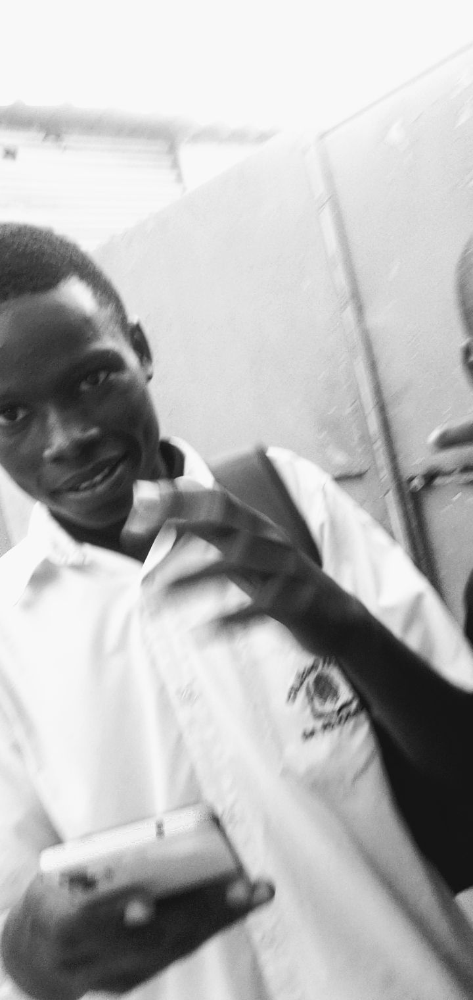
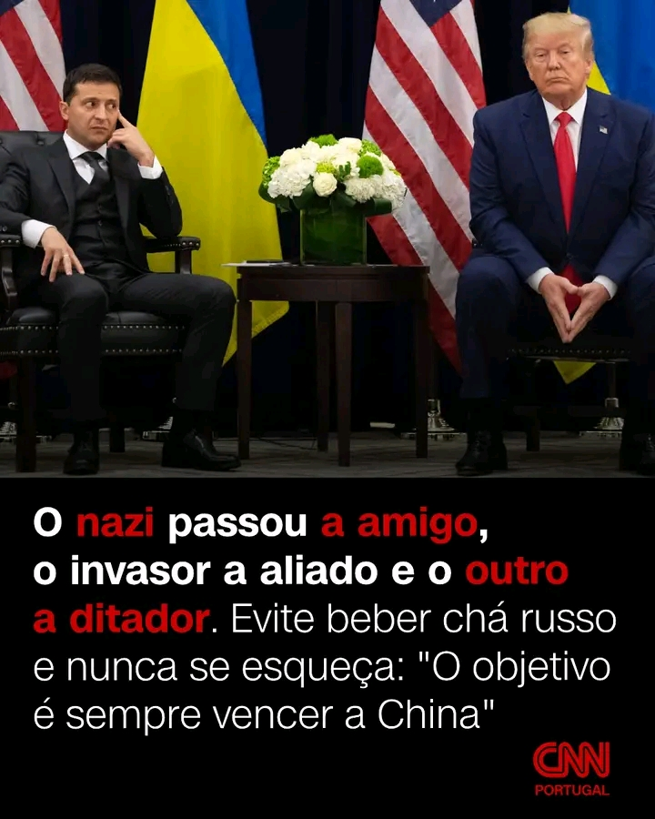
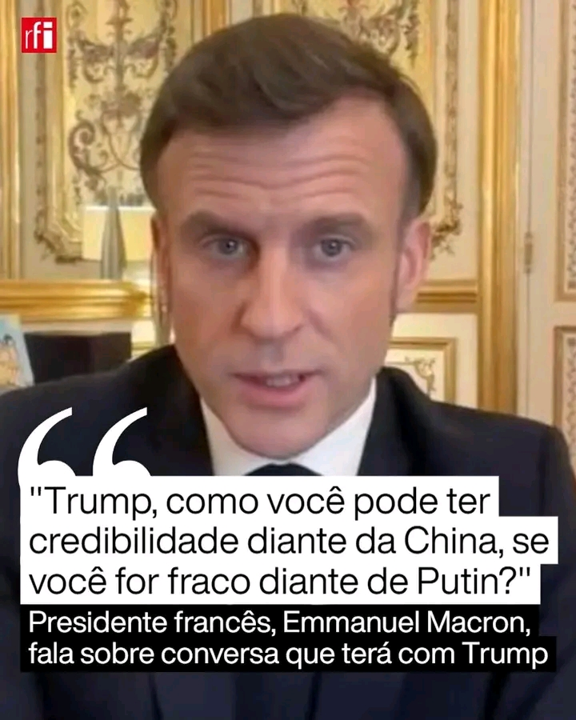

Luto!
Faleceu nesta terça feira o politico lider do partido GADOS UNIDOS POR SUCESSO (GUS) Daju Simba o Bruxo da familia,daju foi morto pelos seus amigos Leonel Paulino e Arnaldo Bolessa,membros do grupo os canibais. os assassinos encontram - se foragidos.
Trump
Ao fim de um mês de mandato, Donald Trump chamou Volodymyr Zelensky de “ditador sem eleições” e avisou-o para agir rapidamente ou “não lhe restará um país”, numa tentativa de forçar eleições na Ucrânia. Em resposta, Zelensky acusou Trump de estar numa “bolha de desinformação” e de repetir a propaganda russa. Para o especialista Jorge Botelho Moniz, o novo rumo da Casa Branca representa um "volte-face muito grande das narrativas", alinhando-se com a retórica do Kremlin. O major-general Agostinho Costa considera as declarações de Trump “arrasadoras” e acredita que o real objetivo é enfraquecer a aliança entre Rússia e China. Leia o artigo completo: https://swki.me/faXtXZTX ✍️ Nuno Mandeiro #donaldtrump #zelensky #putin #usa #russia #ucriania #guerra #china
recado de macron para trump
Recado de Macron para Trump... O presidente francês Emmanuel Macron respondeu, na noite de quinta-feira (20), às perguntas de seguidores de suas redes sociais sobre o conflito na Ucrânia. Na live, o chefe de Estado informou que deve ir a Washington na próxima segunda-feira (24) e explicou o que pretende dizer a Donald Trump. Ao ser questionado sobre a conversa que tera com o chefe da Casa Branca, Macron foi direto: “O que vou fazer é dizer a ele, basicamente, que você não pode ser fraco diante do presidente Putin, pois não é você, não é seu estilo, não é do seu interesse. Então, como você pode ter credibilidade diante da China, se você for fraco diante de Putin?”. Saiba mais com a @rfi_br Link na bio. . . . #macron #ucranis #guerra #trump #diplomacia @emmanuelmacron @realdonaldtrump
Coreia do norte

Coreia do Norte O presidente da Coreia do Norte Kim Jon-Un elaborou uma lei que proíbe a transmissão dos jogos de três equipas da Premier League no seu país. Os jogos do Tottenham Hotspurs, Wolverhampton Wanderers e Brentford foram barrados e não voltarão a ser transmitidos na Coreia do Norte. O motivo? Estes três clubes têm jogadores sul coreanos nos seus plantéis.